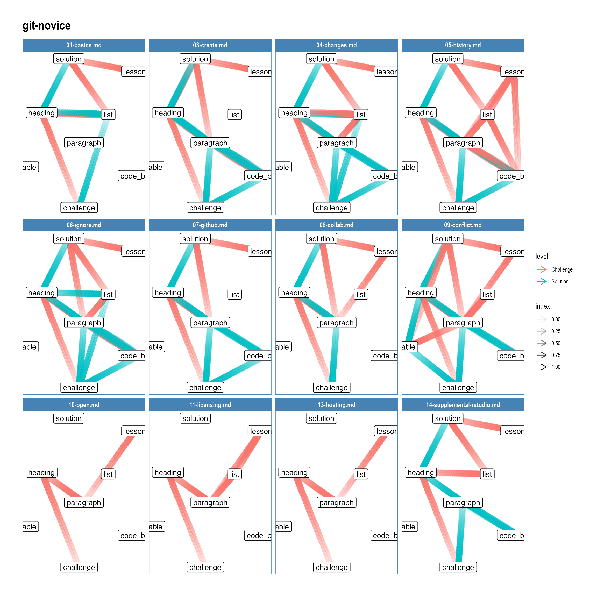
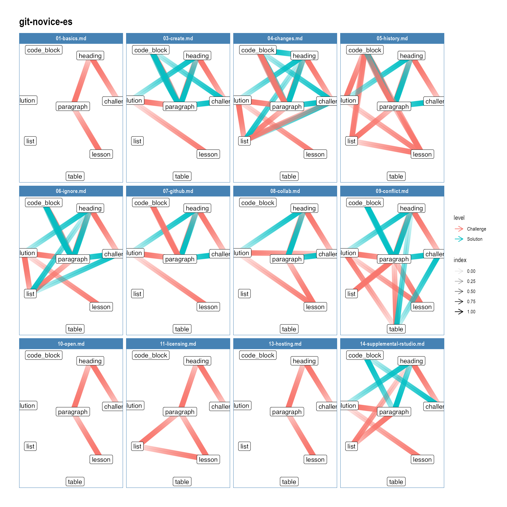
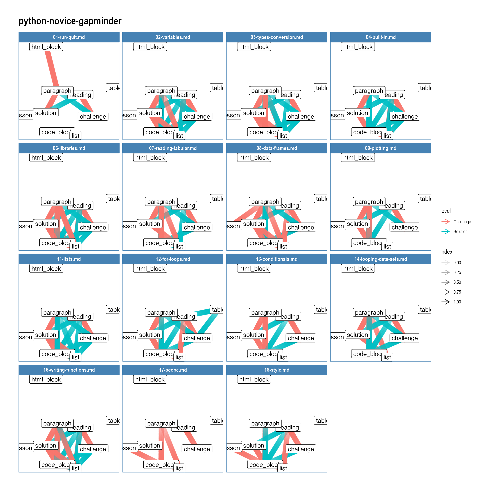
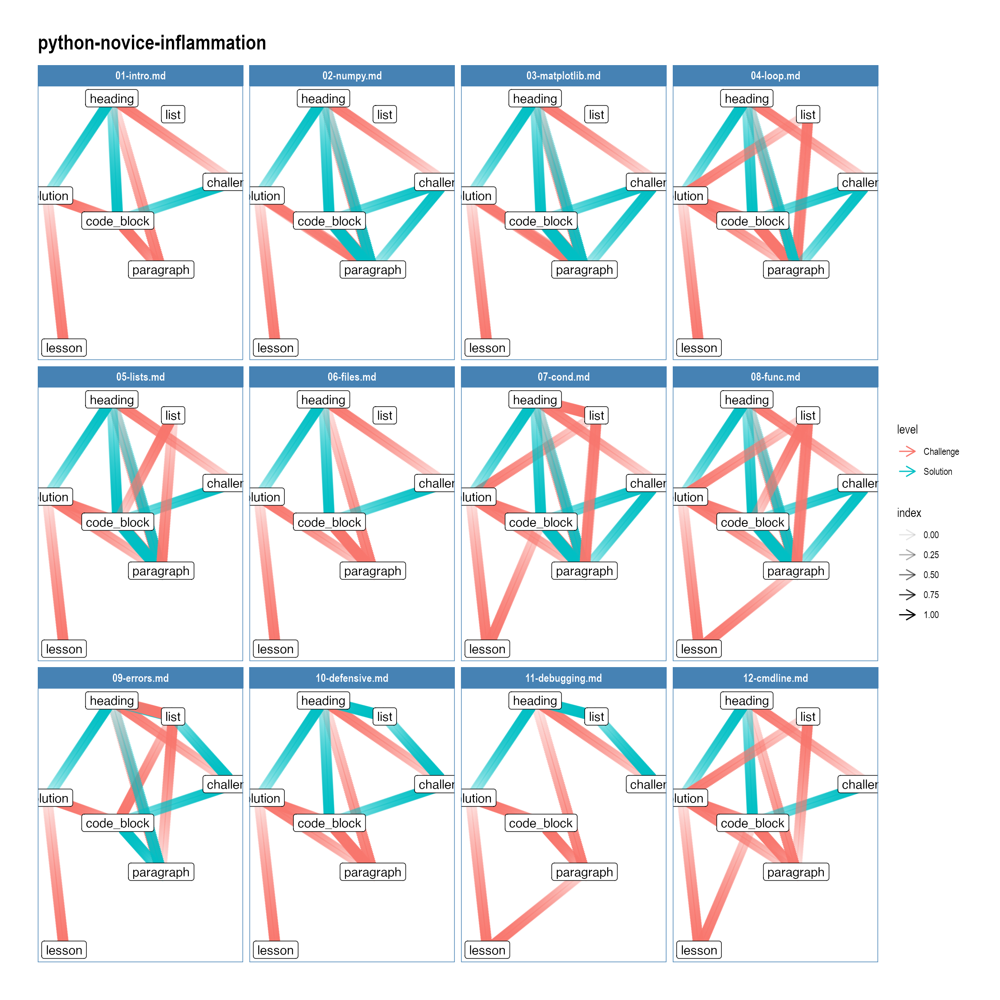
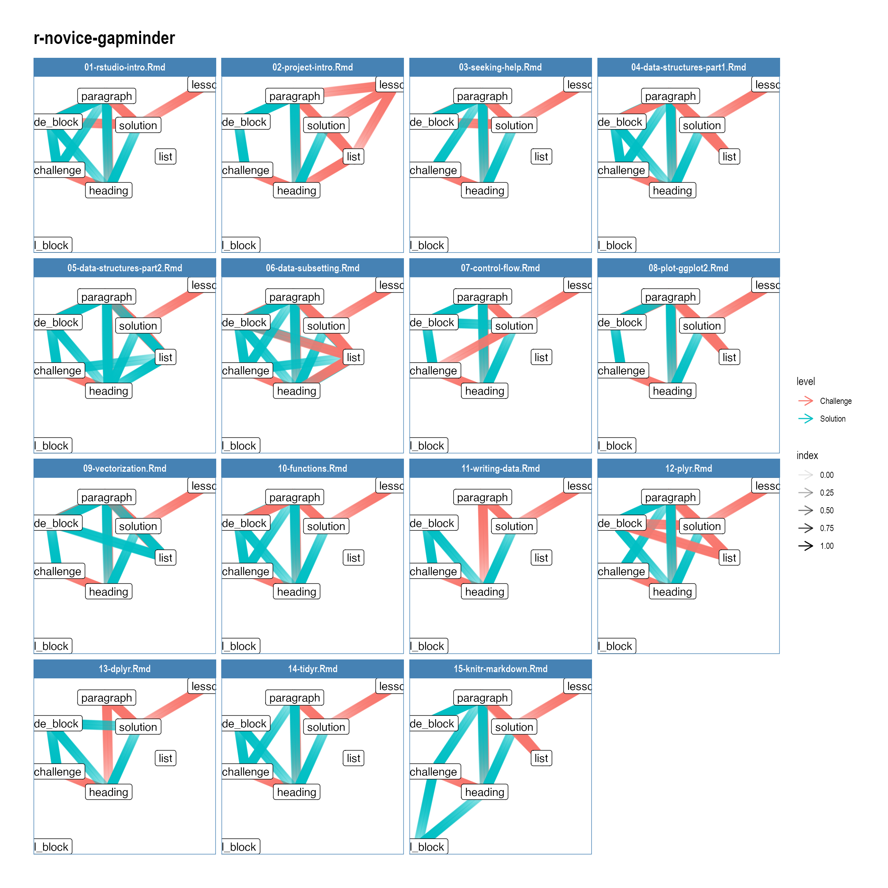
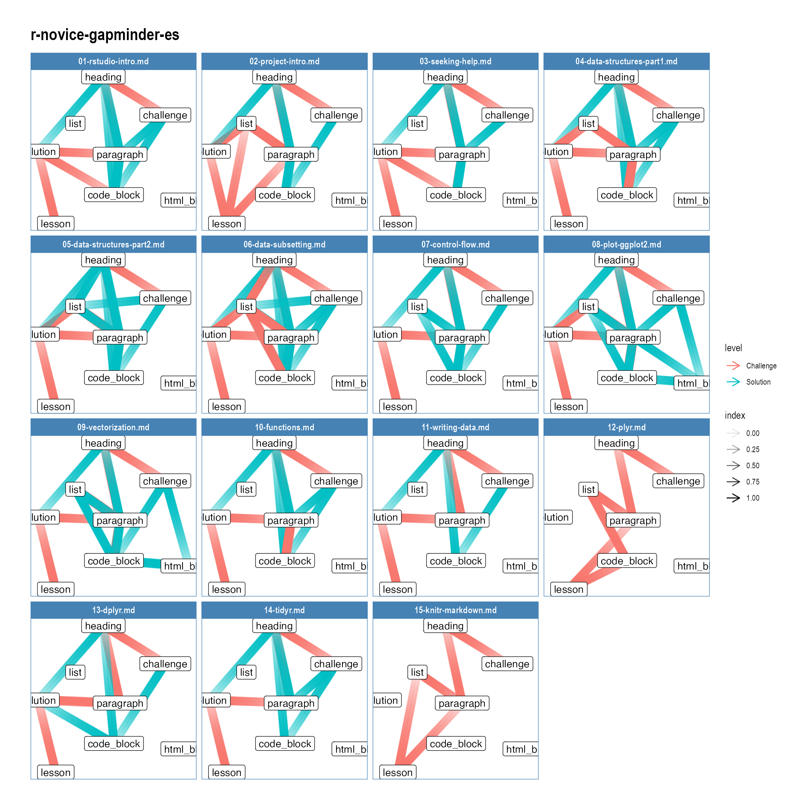
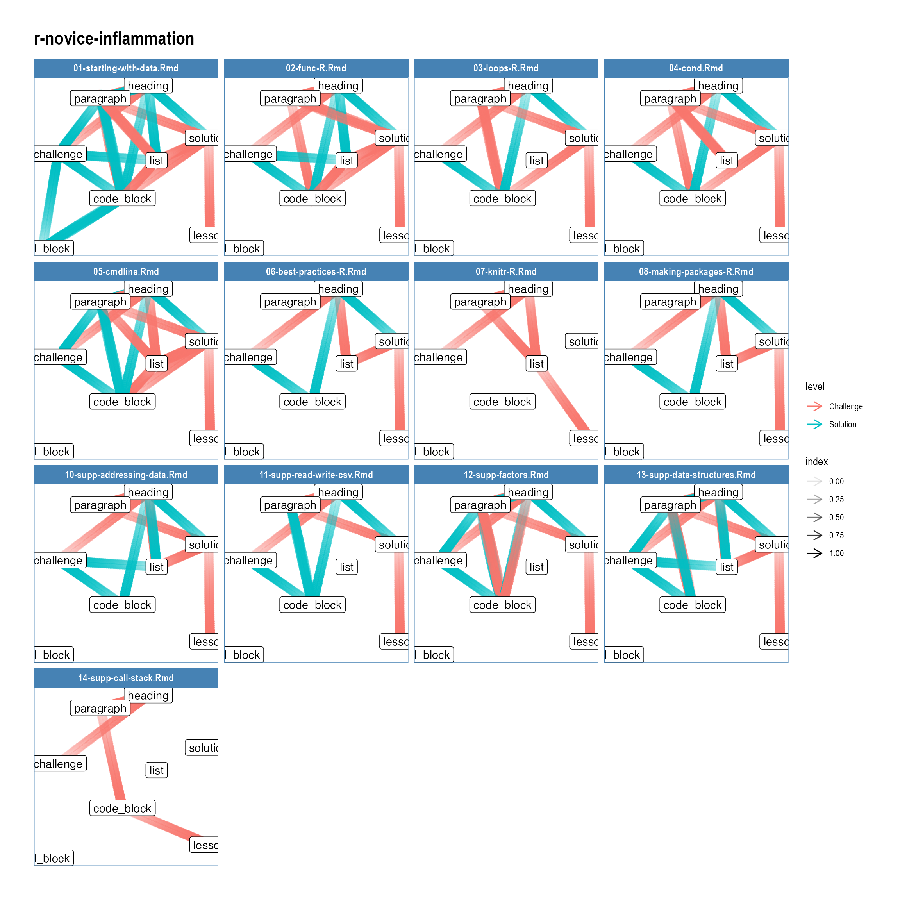
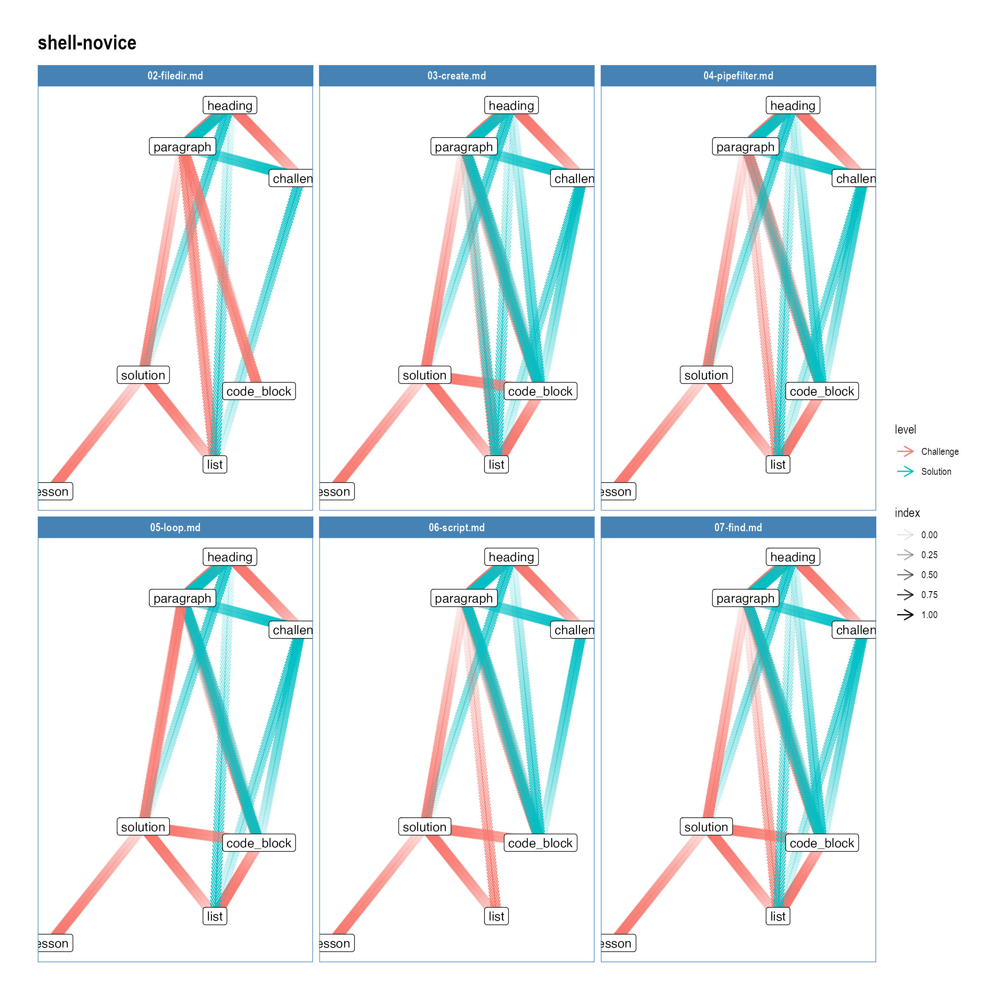
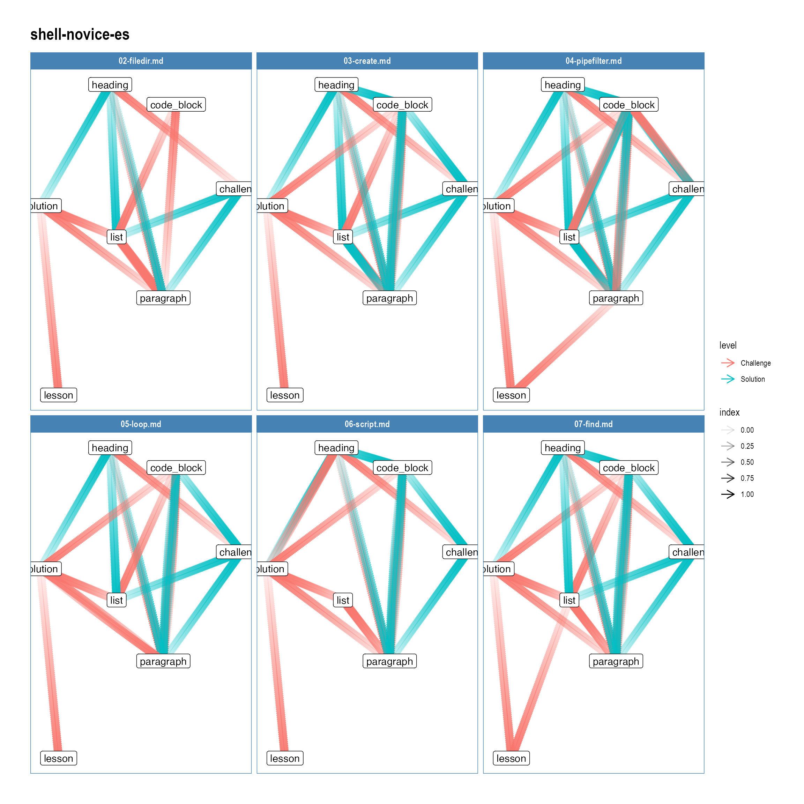

I wrote this package to help me parse the Carpentries’ markdown files so that I can understand how I want to update the lesson templates.
library(tidygraph) #> #> Attaching package: 'tidygraph' #> The following object is masked from 'package:stats': #> #> filter library(magrittr) library(pegboard) library(ggraph) #> Loading required package: ggplot2 library(dplyr) #> #> Attaching package: 'dplyr' #> The following objects are masked from 'package:stats': #> #> filter, lag #> The following objects are masked from 'package:base': #> #> intersect, setdiff, setequal, union library(purrr) #> #> Attaching package: 'purrr' #> The following object is masked from 'package:magrittr': #> #> set_names library(glue) #> #> Attaching package: 'glue' #> The following object is masked from 'package:dplyr': #> #> collapse library(xml2) library(gt)
swc_path <- fs::file_temp(pattern = "SWC") swc_core_lessons <- c( "shell-novice", "shell-novice-es", "git-novice", "git-novice-es", "python-novice-inflammation", "python-novice-gapminder", "r-novice-inflammation", "r-novice-gapminder", "r-novice-gapminder-es", NULL ) SWC <- map(glue("swcarpentry/{swc_core_lessons}"), get_lesson, path = swc_path) #> Error: Duplicate map key: 'keypoints' #> could not find _episodes/, using _episodes_rmd/ as the source #> could not find _episodes/, using _episodes_rmd/ as the source names(SWC) <- swc_core_lessons
One of the things I like to look at is what unique patterns we find with the block elements in the challenges. We can use the graph = TRUE element to check this across our curricula. Setting recurse = TRUE dips into the block elements that are nested within block elements.
relationships <- map_dfr(SWC, ~.x$challenges(graph = TRUE, recurse = TRUE), .id = "Lesson") %>% as_tibble() relationships #> # A tibble: 4,681 x 7 #> Lesson Episode Block from to pos level #> <chr> <chr> <chr> <chr> <chr> <chr> <int> #> 1 shell-novice 02-filedir.md 1 challenge heading 402:1-418:14 1 #> 2 shell-novice 02-filedir.md 1 heading paragraph 402:3-402:30 1 #> 3 shell-novice 02-filedir.md 1 paragraph paragraph 404:3-405:80 1 #> 4 shell-novice 02-filedir.md 1 paragraph solution 407:3-409:15 1 #> 5 shell-novice 02-filedir.md 1 solution lesson 411:3-418:14 1 #> 6 shell-novice 02-filedir.md 1 solution heading 411:3-418:14 2 #> 7 shell-novice 02-filedir.md 1 heading paragraph 411:5-411:15 2 #> 8 shell-novice 02-filedir.md 1 paragraph challenge 412:5-418:14 2 #> 9 shell-novice 02-filedir.md 2 challenge heading 420:1-435:14 1 #> 10 shell-novice 02-filedir.md 2 heading paragraph 420:3-420:43 1 #> # … with 4,671 more rows curr_graph <- relationships %>% dplyr::mutate(level = dplyr::case_when( level == 1 ~ "Challenge", level == 2 ~ "Solution" )) %>% dplyr::mutate(grp = Lesson) %>% dplyr::group_by(grp) %>% dplyr::distinct(Lesson, Episode, from, to, level) %>% dplyr::group_map(~as_tbl_graph(.x)) curr_graph[[1]] #> # A tbl_graph: 8 nodes and 136 edges #> # #> # A directed multigraph with 1 component #> # #> # Node Data: 8 x 1 (active) #> name #> <chr> #> 1 challenge #> 2 heading #> 3 list #> 4 solution #> 5 paragraph #> 6 code_block #> # … with 2 more rows #> # #> # Edge Data: 136 x 5 #> from to Lesson Episode level #> <int> <int> <chr> <chr> <chr> #> 1 1 2 git-novice 01-basics.md Challenge #> 2 2 3 git-novice 01-basics.md Challenge #> 3 3 4 git-novice 01-basics.md Challenge #> # … with 133 more rows
walk( curr_graph, ~print( ggraph(.x, layout = 'kk') + geom_edge_fan( aes(alpha = stat(index), color = level), arrow = grid::arrow(length = ggplot2::unit(0.125, "inches")) ) + geom_node_label(aes(label = name)) + facet_edges(~Episode) + theme_graph(foreground = 'steelblue', fg_text_colour = 'white') + ggtitle(as_tibble(activate(.x, edges))$Lesson[1]) + NULL ) )

I wasnt to examine the relationships in a bit finer detail. The way the graph works is that the solution nodes will either point to the contents inside the solution block (normally the header), or the exit point from the solution block (either an element from the challenge block or out to the lesson itself).
How many ways do we enter and exit solutions?
n_blocks <- relationships %>% group_by(Lesson, Episode, Block) %>% count() %>% nrow() res <- relationships %>% filter(from == "solution") %>% count(from, to, level) %>% arrange(level, desc(n)) %>% mutate(fraction = n/n_blocks) res %>% select(level, exit = to, n, percent = fraction) %>% mutate(exit = gsub("_", " ", exit)) %>% mutate(exit = `substring<-`(exit, 1, 1, toupper(substr(exit, 1, 1)))) %>% gt() %>% tab_row_group( "...enters at", rows = level == 2 ) %>% tab_row_group( "...exits to", rows = level == 1 ) %>% fmt_percent( columns = vars(percent), decimals = 2 ) %>% fmt_number( columns = vars(n), decimals = 0 ) %>% cols_hide(columns = vars(level)) %>% cols_align( columns = vars(exit), align = "left" ) %>% cols_align( columns = vars(n), align = "right" ) %>% cols_width( vars(exit) ~ px(140), everything() ~ px(80) ) %>% cols_label( exit = md("A **solution block**"), n = md("**n**"), percent = md("**%**") ) %>% opt_row_striping() #> Warning in min(rows_matched): no non-missing arguments to min; returning Inf #> Warning in max(rows_matched): no non-missing arguments to max; returning -Inf
| A solution block | n | % |
|---|---|---|
| ...exits to | ||
| Lesson | 411 | 87.26% |
| Paragraph | 12 | 2.55% |
| Solution | 4 | 0.85% |
| Code block | 3 | 0.64% |
| Heading | 2 | 0.42% |
| List | 2 | 0.42% |
| ...enters at | ||
| Heading | 431 | 91.51% |
| Code block | 3 | 0.64% |
What I can tell from here is that % of the time, solutions will dump out into the lessons, but other times the challenge block may continue. There is the weird bit where there are solutions that go to solutions. What’s going on there?
relationships %>% filter(from == "solution", to == "solution") %>% select(Lesson, Episode, pos, everything()) #> # A tibble: 4 x 7 #> Lesson Episode pos Block from to level #> <chr> <chr> <chr> <chr> <chr> <chr> <int> #> 1 python-novice-inflamma… 02-numpy.md 615:3-638… 3 soluti… soluti… 1 #> 2 python-novice-inflamma… 03-matplotlib.… 137:3-145… 1 soluti… soluti… 1 #> 3 python-novice-inflamma… 07-cond.md 291:3-302… 4 soluti… soluti… 1 #> 4 python-novice-inflamma… 07-cond.md 304:3-315… 4 soluti… soluti… 1 # Adding ten lines to the range and the length of the yaml readLines(SWC$`python-novice-inflammation`$files[2])[(615:(638 + 10)) + 23] #> [1] "> > ## Solution" #> [2] "> >" #> [3] "> > A 'gotcha' with array indexing is that singleton dimensions" #> [4] "> > are dropped by default. That means `A[:, 0]` is a one dimensional" #> [5] "> > array, which won't stack as desired. To preserve singleton dimensions," #> [6] "> > the index itself can be a slice or array. For example, `A[:, :1]` returns" #> [7] "> > a two dimensional array with one singleton dimension (i.e. a column" #> [8] "> > vector)." #> [9] "> >" #> [10] "> > ~~~" #> [11] "> > D = numpy.hstack((A[:, :1], A[:, -1:]))" #> [12] "> > print('D = ')" #> [13] "> > print(D)" #> [14] "> > ~~~" #> [15] "> > {: .language-python}" #> [16] "> >" #> [17] "> > ~~~" #> [18] "> > D =" #> [19] "> > [[1 3]" #> [20] "> > [4 6]" #> [21] "> > [7 9]]" #> [22] "> > ~~~" #> [23] "> > {: .output}" #> [24] "> {: .solution}" #> [25] ">" #> [26] "> > ## Solution" #> [27] "> >" #> [28] "> > An alternative way to achieve the same result is to use Numpy's" #> [29] "> > delete function to remove the second column of A." #> [30] "> >" #> [31] "> > ~~~" #> [32] "> > D = numpy.delete(A, 1, 1)" #> [33] "> > print('D = ')" #> [34] "> > print(D)" readLines(SWC$`python-novice-inflammation`$files[3])[(129:(137 + 10)) + 13] #> [1] "> ~~~" #> [2] "> axes3.set_ylim(0,6)" #> [3] "> ~~~" #> [4] "> {: .language-python}" #> [5] ">" #> [6] "> Update your plotting code to automatically set a more appropriate scale." #> [7] "> (Hint: you can make use of the `max` and `min` methods to help.)" #> [8] ">" #> [9] "> > ## Solution" #> [10] "> > ~~~" #> [11] "> > # One method" #> [12] "> > axes3.set_ylabel('min')" #> [13] "> > axes3.plot(numpy.min(data, axis=0))" #> [14] "> > axes3.set_ylim(0,6)" #> [15] "> > ~~~" #> [16] "> > {: .language-python}" #> [17] "> {: .solution}" #> [18] ">" #> [19] "> > ## Solution" readLines(SWC$`python-novice-inflammation`$files[7])[(291:(302 + 10)) + 20] #> [1] "> > ## Hint" #> [2] "> > There is a [built-in function `abs`][abs-function] that returns the absolute value of" #> [3] "> > a number:" #> [4] "> > ~~~" #> [5] "> > print(abs(-12))" #> [6] "> > ~~~" #> [7] "> > {: .language-python}" #> [8] "> > ~~~" #> [9] "> > 12" #> [10] "> > ~~~" #> [11] "> > {: .output}" #> [12] "> {: .solution}" #> [13] ">" #> [14] "> > ## Solution 1" #> [15] "> > ~~~" #> [16] "> > a = 5" #> [17] "> > b = 5.1" #> [18] "> >" #> [19] "> > if abs(a - b) <= 0.1 * abs(b):" #> [20] "> > print('True')" #> [21] "> > else:" #> [22] "> > print('False')"
relationships %>% filter( from == "solution", to != "solution", to != "lesson", level == 1 ) %>% select(-level, -from) %>% mutate(Block = as.integer(Block)) %>% distinct(Lesson, Episode, Block) -> odd_blocks odd_blocks #> # A tibble: 13 x 3 #> Lesson Episode Block #> <chr> <chr> <int> #> 1 shell-novice 05-loop.md 2 #> 2 shell-novice-es 05-loop.md 4 #> 3 shell-novice-es 06-script.md 2 #> 4 git-novice 03-create.md 1 #> 5 python-novice-inflammation 02-numpy.md 1 #> 6 python-novice-inflammation 02-numpy.md 4 #> 7 python-novice-inflammation 03-matplotlib.md 1 #> 8 python-novice-gapminder 09-plotting.md 2 #> 9 python-novice-gapminder 12-for-loops.md 4 #> 10 r-novice-inflammation 02-func-R.Rmd 1 #> 11 r-novice-inflammation 05-cmdline.Rmd 1 #> 12 r-novice-gapminder 13-dplyr.Rmd 2 #> 13 r-novice-gapminder-es 13-dplyr.md 2 odd_blocks %<>% dplyr::rowwise() %>% mutate(src = list(SWC[[Lesson]]$challenges()[[Episode]][[Block]])) names(odd_blocks$src) <- glue_data(odd_blocks, "{Lesson}/{Episode} (Block {Block})" ) purrr::map(SWC, ~.x$episodes) %>% purrr::flatten() %>% purrr::walk(~.x$use_dovetail()$unblock()) #> Warning: episode body missing purrr::walk2(names(odd_blocks$src), odd_blocks$src, ~cat(.x, xml_text(.y), sep = "\n---\n")) #> shell-novice/05-loop.md (Block 2) #> --- #> #' ## Limiting Sets of Files #> #' #> #' What would be the output of running the following loop in the `data-shell/molecules` directory? #> #' #> #' ``` #> $ for filename in c* #> > do #> > ls $filename #> > done #> #' ``` #> #' #> #' 1. No files are listed. #> #' 2. All files are listed. #> #' 3. Only `cubane.pdb`, `octane.pdb` and `pentane.pdb` are listed. #> #' 4. Only `cubane.pdb` is listed. #> #' #> #' @solution Solution #> #' #> #' 4 is the correct answer. `*` matches zero or more characters, so any file name starting with #> #' the letter c, followed by zero or more other characters will be matched. #> #' #> #' #> #' @end #> #' #> #' How would the output differ from using this command instead? #> #' #> #' ``` #> $ for filename in *c* #> > do #> > ls $filename #> > done #> #' ``` #> #' #> #' 1. The same files would be listed. #> #' 2. All the files are listed this time. #> #' 3. No files are listed this time. #> #' 4. The files `cubane.pdb` and `octane.pdb` will be listed. #> #' 5. Only the file `octane.pdb` will be listed. #> #' #> #' @solution Solution #> #' #> #' 4 is the correct answer. `*` matches zero or more characters, so a file name with zero or more #> #' characters before a letter c and zero or more characters after the letter c will be matched. #> #' #> #' #> #> shell-novice-es/05-loop.md (Block 4) #> --- #> #' ## Limitación de conjuntos de archivos #> #' #> #' En el mismo directorio, ¿cuál sería la salida del siguiente bucle?: #> #' #> #' ``` #> for filename in c* #> do #> ls $filename #> done #> #' ``` #> #' #> #' 1. No se muestra ningún archivo. #> #' 2. Todos los archivos son enumerados. #> #' 3. Sólo se enumeran `cubane.pdb`, `octane.pdb` y `pentane.pdb`. #> #' 4. Sólamente se enumera `cubane.pdb`. #> #' #> #' @solution Solución #> #' #> #' La respuesta correcta es 4. `*` coincide con cero o más caracteres, así que cualquier nombre que comience con la letra c, seguida de cero o más caracteres, coincidirá con el comando #> #' #> #' #> #' @end #> #' #> #' ¿Cómo diferiría el resultado si usáramos el siguiente comando en lugar del anterior? #> #' #> #' ``` #> for filename in *c* #> do #> ls $filename #> done #> #' ``` #> #' #> #' 1. Se listarían los mismos archivos. #> #' 2. Esta vez se enumerarían todos los archivos. #> #' 3. Esta vez no enumeraría ningún archivo. #> #' 4. Sólo se enumeraría el archivo `octane.pdb`. #> #' #> #' @solution Solución #> #' #> #' La respuesta correcta es 4. `*` coincide con cero o más caracteres, por lo que la expresión `*c*` coincidirá con un nombre de archivo con cero o más caracteres antes de la letra c, y cero o más caracteres después de la letra c. #> #' #> #' #> #> shell-novice-es/06-script.md (Block 2) #> --- #> #' ## Listando especies únicas #> #' #> #' Leah tiene varios cientos de archivos de datos, cada uno de los cuales tiene el siguiente formato : #> #' #> #' ``` #> 2013-11-05,deer,5 #> 2013-11-05,rabbit,22 #> 2013-11-05,raccoon,7 #> 2013-11-06,rabbit,19 #> 2013-11-06,deer,2 #> 2013-11-06,fox,1 #> 2013-11-07,rabbit,18 #> 2013-11-07,bear,1 #> #' ``` #> #' #> #' Un ejemplo de este tipo de archivo se puede ver en data-shell/data/animal-counts/animals.txt. #> #' #> #' Escribe un **script** de la terminal llamado `species.sh` que tome cualquier número de #> #' nombres de archivos como parámetros de línea de comandos, y utilice `cut`, `sort` y #> #' `uniq` para mostrar una lista de las especies únicas que aparecen en cada uno de #> #' esos archivos por separado. #> #' #> #' @solution Solución #> #' #> #' ``` #> # El script para encontrar especies unicas en archivos .csv en donde "species" es la segunda data field #> # Este script acepta cualquier número de nombres de archivos como argumentos de la línea de comando. #> #> # Bucle loop #> for file in $@ #> do #> echo "Unique species in $file:" #> # Extraer nombres de especies #> cut -d , -f 2 $file | sort | uniq #> done #> #' ``` #> #' #> #' @end Encuentre el archivo más largo con una extensión determinada #> #' #> #' Escribe un **script** de la terminal llamado `longest.sh` que tome el nombre de un #> #' directorio y una extensión de nombre de archivo como sus parámetros, e imprima #> #' el nombre del archivo con más líneas en ese directorio con esa extensión. Por ejemplo: #> #' #> #' ``` #> $ bash longest.sh /tmp/data pdb #> #' ``` #> #' #> #' Mostraría el nombre del archivo `.pdb` en`/tmp/data` que tenga más líneas. #> #' #> #' @solution Solución #> #' #> #' ``` #> # Script que toma 2 parámetros: #> # 1. un nombre de directorio #> # 2. una extensión de archivo #> # y muestra el nombre del archivo de ese directorio #> # con las líneas que coincide con la extensión del archivo. #> #> wc -l $1/*.$2 | sort -n | tail -n 2 | head -n 1 #> #' ``` #> #> git-novice/03-create.md (Block 1) #> --- #> #' ## Places to Create Git Repositories #> #' #> #' Along with tracking information about planets (the project we have already created), #> #' Dracula would also like to track information about moons. #> #' Despite Wolfman's concerns, Dracula creates a `moons` project inside his `planets`\ #> #' project with the following sequence of commands: #> #' #> #' ``` #> $ cd ~/Desktop # return to Desktop directory #> $ cd planets # go into planets directory, which is already a Git repository #> $ ls -a # ensure the .git subdirectory is still present in the planets directory #> $ mkdir moons # make a subdirectory planets/moons #> $ cd moons # go into moons subdirectory #> $ git init # make the moons subdirectory a Git repository #> $ ls -a # ensure the .git subdirectory is present indicating we have created a new Git repository #> #' ``` #> #' #> #' Is the `git init` command, run inside the `moons` subdirectory, required for #> #' tracking files stored in the `moons` subdirectory? #> #' #> #' @solution Solution #> #' #> #' No. Dracula does not need to make the `moons` subdirectory a Git repository #> #' because the `planets` repository will track all files, sub-directories, and #> #' subdirectory files under the `planets` directory. Thus, in order to track #> #' all information about moons, Dracula only needed to add the `moons` subdirectory #> #' to the `planets` directory. #> #' #> #' Additionally, Git repositories can interfere with each other if they are "nested": #> #' the outer repository will try to version-control #> #' the inner repository. Therefore, it's best to create each new Git #> #' repository in a separate directory. To be sure that there is no conflicting #> #' repository in the directory, check the output of `git status`. If it looks #> #' like the following, you are good to go to create a new repository as shown #> #' above: #> #' #> #' ``` #> $ git status #> #' ``` #> #' #> #' ``` #> fatal: Not a git repository (or any of the parent directories): .git #> #' ``` #> #' #> #' @end Correcting git init Mistakes #> #' #> #' Wolfman explains to Dracula how a nested repository is redundant and may cause confusion #> #' down the road. Dracula would like to remove the nested repository. How can Dracula undo #> #' his last `git init` in the `moons` subdirectory? #> #' #> #' @solution Solution -- USE WITH CAUTION! #> #' #> #' ### Background #> #' #> #' Removing files from a git repository needs to be done with caution. To remove files from the working tree and not from your working directory, use #> #' #> #' ``` #> $ rm filename #> #' ``` #> #' #> #' The file being removed has to be in sync with the branch head with no updates. If there are updates, the file can be removed by force by using the `-f` option. Similarly a directory can be removed from git using `rm -r dirname` or `rm -rf dirname`. #> #' #> #' ### Solution #> #' #> #' Git keeps all of its files in the `.git` directory. #> #' To recover from this little mistake, Dracula can just remove the `.git` #> #' folder in the moons subdirectory by running the following command from inside the `planets` directory: #> #' #> #' ``` #> $ rm -rf moons/.git #> #' ``` #> #' #> #' But be careful! Running this command in the wrong directory, will remove #> #' the entire Git history of a project you might want to keep. Therefore, always check your current directory using the #> #' command `pwd`. #> #' #> #' #> #> python-novice-inflammation/02-numpy.md (Block 1) #> --- #> #' ## Slicing Strings #> #' #> #' A section of an array is called a [slice]({{ page.root }}/reference/#slice). #> #' We can take slices of character strings as well: #> #' #> #' ``` #> element = 'oxygen' #> print('first three characters:', element[0:3]) #> print('last three characters:', element[3:6]) #> #' ``` #> #' #> #' ``` #> first three characters: oxy #> last three characters: gen #> #' ``` #> #' #> #' What is the value of `element[:4]`? #> #' What about `element[4:]`? #> #' Or `element[:]`? #> #' #> #' @solution Solution #> #' #> #' ``` #> oxyg #> en #> oxygen #> #' ``` #> #' #> #' @end #> #' #> #' What is `element[-1]`? #> #' What is `element[-2]`? #> #'#' #> #' @solution Solution #> #' #> #' ``` #> n #> e #> #' ``` #> #' #> #' @end #> #' #> #' Given those answers, #> #' explain what `element[1:-1]` does. #> #'#' #> #' @solution Solution #> #' #> #' Creates a substring from index 1 up to (not including) the final index, #> #' effectively removing the first and last letters from 'oxygen' #> #' #> #' #> #' @end #> #' #> #' How can we rewrite the slice for getting the last three characters of `element`, #> #' so that it works even if we assign a different string to `element`? #> #' Test your solution with the following strings: `carpentry`, `clone`, `hi`. #> #'#' #> #' @solution Solution #> #' #> #' ``` #> element = 'oxygen' #> print('last three characters:', element[-3:]) #> element = 'carpentry' #> print('last three characters:', element[-3:]) #> element = 'clone' #> print('last three characters:', element[-3:]) #> element = 'hi' #> print('last three characters:', element[-3:]) #> #' ``` #> #' #> #' ``` #> last three characters: gen #> last three characters: try #> last three characters: one #> last three characters: hi #> #' ``` #> #> python-novice-inflammation/02-numpy.md (Block 4) #> --- #> #' ## Change In Inflammation #> #' #> #' The patient data is *longitudinal* in the sense that each row represents a #> #' series of observations relating to one individual. This means that #> #' the change in inflammation over time is a meaningful concept. #> #' Let's find out how to calculate changes in the data contained in an array #> #' with NumPy. #> #' #> #' The `numpy.diff()` function takes an array and returns the differences #> #' between two successive values. Let's use it to examine the changes #> #' each day across the first week of patient 3 from our inflammation dataset. #> #' #> #' ``` #> patient3_week1 = data[3, :7] #> print(patient3_week1) #> #' ``` #> #' #> #' ``` #> [0. 0. 2. 0. 4. 2. 2.] #> #' ``` #> #' #> #' Calling `numpy.diff(patient3_week1)` would do the following calculations #> #' #> #' ``` #> [ 0 - 0, 2 - 0, 0 - 2, 4 - 0, 2 - 4, 2 - 2 ] #> #' ``` #> #' #> #' and return the 6 difference values in a new array. #> #' #> #' ``` #> numpy.diff(patient3_week1) #> #' ``` #> #' #> #' ``` #> array([ 0., 2., -2., 4., -2., 0.]) #> #' ``` #> #' #> #' Note that the array of differences is shorter by one element (length 6). #> #' #> #' When calling `numpy.diff` with a multi-dimensional array, an `axis` argument may #> #' be passed to the function to specify which axis to process. When applying #> #' `numpy.diff` to our 2D inflammation array `data`, which axis would we specify? #> #' #> #' @solution Solution #> #' #> #' Since the row axis (0) is patients, it does not make sense to get the #> #' difference between two arbitrary patients. The column axis (1) is in #> #' days, so the difference is the change in inflammation -- a meaningful #> #' concept. #> #' #> #' ``` #> numpy.diff(data, axis=1) #> #' ``` #> #' #> #' @end #> #' #> #' If the shape of an individual data file is `(60, 40)` (60 rows and 40 #> #' columns), what would the shape of the array be after you run the `diff()` #> #' function and why? #> #'#' #> #' @solution Solution #> #' #> #' The shape will be `(60, 39)` because there is one fewer difference between #> #' columns than there are columns in the data. #> #' #> #' #> #' @end #> #' #> #' How would you find the largest change in inflammation for each patient? Does #> #' it matter if the change in inflammation is an increase or a decrease? #> #'#' #> #' > ## Solution #> #' #> #' By using the `numpy.max()` function after you apply the `numpy.diff()` #> #' function, you will get the largest difference between days. #> #' #> #' ``` #> #' numpy.max(numpy.diff(data, axis=1), axis=1) #> #' ``` #> #' #> #' ``` #> #' array([ 7., 12., 11., 10., 11., 13., 10., 8., 10., 10., 7., #> #' 7., 13., 7., 10., 10., 8., 10., 9., 10., 13., 7., #> #' 12., 9., 12., 11., 10., 10., 7., 10., 11., 10., 8., #> #' 11., 12., 10., 9., 10., 13., 10., 7., 7., 10., 13., #> #' 12., 8., 8., 10., 10., 9., 8., 13., 10., 7., 10., #> #' 8., 12., 10., 7., 12.]) #> #' ``` #> #' #> #' If inflammation values *decrease* along an axis, then the difference from #> #' one element to the next will be negative. If #> #' you are interested in the **magnitude** of the change and not the #> #' direction, the `numpy.absolute()` function will provide that. #> #' #> #' Notice the difference if you get the largest *absolute* difference #> #' between readings. #> #' #> #' ``` #> #' numpy.max(numpy.absolute(numpy.diff(data, axis=1)), axis=1) #> #' ``` #> #' #> #' ``` #> #' array([ 12., 14., 11., 13., 11., 13., 10., 12., 10., 10., 10., #> #' 12., 13., 10., 11., 10., 12., 13., 9., 10., 13., 9., #> #' 12., 9., 12., 11., 10., 13., 9., 13., 11., 11., 8., #> #' 11., 12., 13., 9., 10., 13., 11., 11., 13., 11., 13., #> #' 13., 10., 9., 10., 10., 9., 9., 13., 10., 9., 10., #> #' 11., 13., 10., 10., 12.]) #> #' ``` #> #> python-novice-inflammation/03-matplotlib.md (Block 1) #> --- #> #' ## Plot Scaling #> #' #> #' Why do all of our plots stop just short of the upper end of our graph? #> #' #> #' @solution Solution #> #' #> #' Because matplotlib normally sets x and y axes limits to the min and max of our data #> #' (depending on data range) #> #' #> #' #> #' @end #> #' #> #' If we want to change this, we can use the `set_ylim(min, max)` method of each 'axes', #> #' for example: #> #' #> #' ``` #> axes3.set_ylim(0,6) #> #' ``` #> #' #> #' Update your plotting code to automatically set a more appropriate scale. #> #' (Hint: you can make use of the `max` and `min` methods to help.) #> #' #> #' @solution Solution #> #' #> #' ``` #> # One method #> axes3.set_ylabel('min') #> axes3.plot(numpy.min(data, axis=0)) #> axes3.set_ylim(0,6) #> #' ``` #> #' #> #' @solution Solution #> #' #> #' ``` #> # A more automated approach #> min_data = numpy.min(data, axis=0) #> axes3.set_ylabel('min') #> axes3.plot(min_data) #> axes3.set_ylim(numpy.min(min_data), numpy.max(min_data) * 1.1) #> #' ``` #> #> python-novice-gapminder/09-plotting.md (Block 2) #> --- #> #' ## Correlations #> #' #> #' Modify the example in the notes to create a scatter plot showing #> #' the relationship between the minimum and maximum GDP per capita #> #' among the countries in Asia for each year in the data set. #> #' What relationship do you see (if any)? #> #' #> #' ``` #> data_asia = pd.read_csv('data/gapminder_gdp_asia.csv', index_col='country') #> data_asia.describe().T.plot(kind='scatter', x='min', y='max') #> #' ``` #> #' #> #' @solution Solution #> #' #> #'  #> #' #> #' No particular correlations can be seen between the minimum and maximum gdp values #> #' year on year. It seems the fortunes of asian countries do not rise and fall together. #> #' #> #' #> #' @end #> #' #> #' You might note that the variability in the maximum is much higher than #> #' that of the minimum. Take a look at the maximum and the max indexes: #> #' #> #' ``` #> data_asia = pd.read_csv('data/gapminder_gdp_asia.csv', index_col='country') #> data_asia.max().plot() #> print(data_asia.idxmax()) #> print(data_asia.idxmin()) #> #' ``` #> #' #> #' @solution Solution #> #' #> #'  #> #' #> #' Seems the variability in this value is due to a sharp drop after 1972. #> #' Some geopolitics at play perhaps? Given the dominance of oil producing countries, #> #' maybe the Brent crude index would make an interesting comparison? #> #' Whilst Myanmar consistently has the lowest gdp, the highest gdb nation has varied #> #' more notably. #> #' #> #' #> #> python-novice-gapminder/12-for-loops.md (Block 4) #> --- #> #' ## Practice Accumulating #> #' #> #' Fill in the blanks in each of the programs below #> #' to produce the indicated result. #> #' #> #' ``` #> # Total length of the strings in the list: ["red", "green", "blue"] => 12 #> total = 0 #> for word in ["red", "green", "blue"]: #> ____ = ____ + len(word) #> print(total) #> #' ``` #> #' #> #' @solution Solution #> #' #> #' ``` #> total = 0 #> for word in ["red", "green", "blue"]: #> total = total + len(word) #> print(total) #> #' ``` #> #' #> #' @end #> #' #> #' ``` #> # List of word lengths: ["red", "green", "blue"] => [3, 5, 4] #> lengths = ____ #> for word in ["red", "green", "blue"]: #> lengths.____(____) #> print(lengths) #> #' ``` #> #' #> #' @solution Solution #> #' #> #' ``` #> lengths = [] #> for word in ["red", "green", "blue"]: #> lengths.append(len(word)) #> print(lengths) #> #' ``` #> #' #> #' @end #> #' #> #' ``` #> # Concatenate all words: ["red", "green", "blue"] => "redgreenblue" #> words = ["red", "green", "blue"] #> result = ____ #> for ____ in ____: #> ____ #> print(result) #> #' ``` #> #' #> #' @solution Solution #> #' #> #' ``` #> words = ["red", "green", "blue"] #> result = "" #> for word in words: #> result = result + word #> print(result) #> #' ``` #> #' #> #' @end #> #' #> #' ``` #> # Create acronym: ["red", "green", "blue"] => "RGB" #> # write the whole thing #> #' ``` #> #' #> #' @solution Solution #> #' #> #' ``` #> acronym = "" #> for word in ["red", "green", "blue"]: #> acronym = acronym + word[0].upper() #> print(acronym) #> #' ``` #> #> r-novice-inflammation/02-func-R.Rmd (Block 1) #> --- #> #' ## Create a Function #> #' #> #' In the last lesson, we learned to **c**ombine elements into a vector using the `c` function, #> #' e.g. `x <- c("A", "B", "C")` creates a vector `x` with three elements. #> #' Furthermore, we can extend that vector again using `c`, e.g. `y <- c(x, "D")` creates a vector `y` with four elements. #> #' Write a function called `highlight` that takes two vectors as arguments, called #> #' `content` and `wrapper`, and returns a new vector that has the wrapper vector #> #' at the beginning and end of the content: #> #' #> #' ```{r, echo=-1} #> highlight <- function(content, wrapper) { #> answer <- c(wrapper, content, wrapper) #> return(answer) #> } #> best_practice <- c("Write", "programs", "for", "people", "not", "computers") #> asterisk <- "***" # R interprets a variable with a single value as a vector #> # with one element. #> highlight(best_practice, asterisk) #> #' ``` #> #' #> #' @solution Solution #> #' #> #' ``` #> highlight <- function(content, wrapper) { #> answer <- c(wrapper, content, wrapper) #> return(answer) #> } #> #' ``` #> #' #> #' @end #> #' #> #' If the variable `v` refers to a vector, then `v[1]` is the vector's first element and `v[length(v)]` is its last (the function `length` returns the number of elements in a vector). #> #' Write a function called `edges` that returns a vector made up of just the first and last elements of its input: #> #' #> #' ```{r, echo=-1} #> edges <- function(v) { #> first <- v[1] #> last <- v[length(v)] #> answer <- c(first, last) #> return(answer) #> } #> dry_principle <- c("Don't", "repeat", "yourself", "or", "others") #> edges(dry_principle) #> #' ``` #> #' #> #' @solution Solution #> #' #> #' ``` #> edges <- function(v) { #> first <- v[1] #> last <- v[length(v)] #> answer <- c(first, last) #> return(answer) #> } #> #' ``` #> #> r-novice-inflammation/05-cmdline.Rmd (Block 1) #> --- #> #' ## A Simple Command-Line Program #> #' #> #' 1. Write a command-line program that does addition and subtraction of two numbers. #> #' #> #' **Hint:** Everything argument read from the command-line is interpreted as a character [string]({{ page.root }}/reference.html#string). #> #' You can convert from a string to a number using the function `as.numeric`. #> #' #> #' ```{r, engine="bash"} #> Rscript arith.R 1 + 2 #> #' ``` #> #' #> #' ```{r, engine="bash"} #> Rscript arith.R 3 - 4 #> #' ``` #> #' #> #' @solution Solution #> #' #> #' ```{r, engine="bash"} #> cat arith.R #> #' ``` #> #' #> #' @end #> #' #> #' 2. What goes wrong if you try to add multiplication using `*` to the program? #> #'#' #> #' @solution Solution #> #' #> #' An error message is returned due to "invalid input." #> #' This is likely because '\*' has a special meaning in the shell, as a wildcard. #> #' #> #' #> #' @end #> #' #> #' 3. Using the function `list.files` introduced in a previous [lesson]({{ page.root }}/03-loops-R/), #> #' write a command-line program called `find-pattern.R` #> #' that lists all the files in the current directory that contain a specific pattern: #> #' #> #' ```{r, engine="bash"} #> # For example, searching for the pattern "print-args" returns the two scripts we wrote earlier #> Rscript find-pattern.R print-args #> #' ``` #> #' #> #' > ## Solution #> #' #> #' ```{r, engine="bash"} #> #' cat find-pattern.R #> #' ``` #> #> r-novice-gapminder/13-dplyr.Rmd (Block 2) #> --- #> #' #> #' ## Challenge 2 #> #' #> #' Calculate the average life expectancy per country. Which has the longest average life #> #' expectancy and which has the shortest average life expectancy? #> #' #> #' @solution Solution to Challenge 2 #> #' #> #' ```{r} #> lifeExp_bycountry <- gapminder %>% #> group_by(country) %>% #> summarize(mean_lifeExp = mean(lifeExp)) #> lifeExp_bycountry %>% #> filter(mean_lifeExp == min(mean_lifeExp) | mean_lifeExp == max(mean_lifeExp)) #> #' ``` #> #' #> #' @end #> #' #> #' Another way to do this is to use the `dplyr` function `arrange()`, which #> #' arranges the rows in a data frame according to the order of one or more #> #' variables from the data frame. It has similar syntax to other functions from #> #' the `dplyr` package. You can use `desc()` inside `arrange()` to sort in #> #' descending order. #> #'#' #> #' > ```{r} #> #' lifeExp_bycountry %>% #> #' arrange(mean_lifeExp) %>% #> #' head(1) #> #' lifeExp_bycountry %>% #> #' arrange(desc(mean_lifeExp)) %>% #> #' head(1) #> #' ``` #> #> r-novice-gapminder-es/13-dplyr.md (Block 2) #> --- #> #' #> #' ## Reto 2 #> #' #> #' Calcula la esperanza de vida media por país. ¿Qué país tiene la esperanza de vida media mayor #> #' y cuál la menor? #> #' #> #' > ## Solución al Reto 2 #> #' #> #' ``` #> #' lifeExp_bycountry <- gapminder %>% #> #' group_by(country) %>% #> #' summarize(mean_lifeExp=mean(lifeExp)) #> #' lifeExp_bycountry %>% #> #' filter(mean_lifeExp == min(mean_lifeExp) | mean_lifeExp == max(mean_lifeExp)) #> #' ``` #> #' #> #' ``` #> #' # A tibble: 2 x 2 #> #' country mean_lifeExp #> #' <fct> <dbl> #> #' 1 Iceland 76.5 #> #' 2 Sierra Leone 36.8 #> #' ``` #> #' #> #' Otro modo de hacer esto es usando la función `arrange()` del paquete `dplyr`, #> #' que distribuye las filas de un **data frame** en función del orden de una #> #' o más variables del **data frame**. Tiene una sintaxis similar a otras funciones #> #' del paquete `dplyr`. Se puede usar `desc()` dentro de `arrange()` para #> #' ordenar de modo descendente. #> #' #> #' @solution #> #' #> #' ``` #> lifeExp_bycountry %>% #> arrange(mean_lifeExp) %>% #> head(1) #> #' ``` #> #' #> #' ``` #> # A tibble: 1 x 2 #> country mean_lifeExp #> <fct> <dbl> #> 1 Sierra Leone 36.8 #> #' ``` #> #' #> #' ``` #> lifeExp_bycountry %>% #> arrange(desc(mean_lifeExp)) %>% #> head(1) #> #' ``` #> #' #> #' ``` #> # A tibble: 1 x 2 #> country mean_lifeExp #> <fct> <dbl> #> 1 Iceland 76.5 #> #' ```